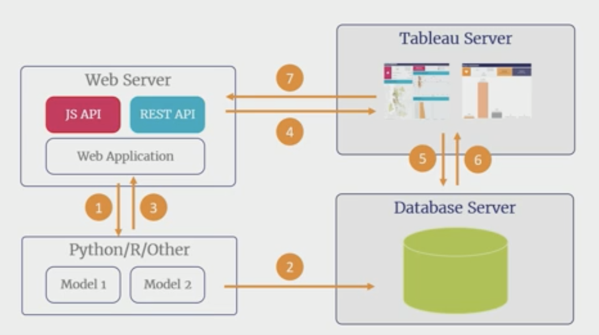

Illuminating Sessions in Tableau Conference 2018
Tableau Conference 2018 已经结束，各个 Session 的视频都已在 Youtube 上放出。粗略挑选观看后，我挑选出这些对我个人而言颇具启发的 Session。
Alert! 下面的视频标题可点击，链接地址都是 Youtube。
基础功能精讲
How to teach Tableau to beginners in two days
极具经验的 Tableau 培训者讲述自己如何安排课程，让初学者在 2 天时间内完成 Tableau 的学习，到达中阶用户的水平。
适合于：略有经验的使用者梳理 Tableau 的技能点，Tableau 教学者借鉴设置教案。
LODs of fun with level of detail calculations
不够直观的 LOD 可以在绘制图表时大展身手，实现一些意想不到的效果。
在刚刚看完的半个小时后我就用上了其中一个小技巧，开心！😄
A beginner’s guide to maps
地图的确用得不多，却是提升仪表板 big-value 的利器。
自助分析式仪表板 / 引导式仪表板
A practical guide to guided analytics
做了半年报表后我就开始想，如何让仪表板具备引导用户使用、分析数据的能力。This is what I needed!
Self-teaching dashboards | Building in instruction to complex dashboards
入门级别的仪表板制作指南，具备一定程度的「引导式分析」能力。
融入业务系统
Embedded analytics with the Tableau Platform
将 Tableau 可视化成果和数据分析能力嵌入业务系统，或作为网页端的展示材料。
忘掉可视化，享用数据成果。
Embedding Tableau for self-service data science
如何以 Tableau 作为「界面」，深度结合网页应用、Tableau 可视化和后端计算能力，将 Python / R / Matlab 的数据科学能力输出给终端用户。
这是一种「低成本」部署数据科学应用的可能。

批量生产报表
Automating production with Python and Tableau APIs
在企业生产环境中，利用 Tableau APIs 进行报表批量化生产。
补充（非 #TC18 资源）
Tableau Zen Master Tips & Tricks - Charts Edition
Tableau Zen Master Andy Kriebel 最近放出的合辑视频，各类报表的制作技巧。单份视频的信息量就可以撑起一个可视化博客。